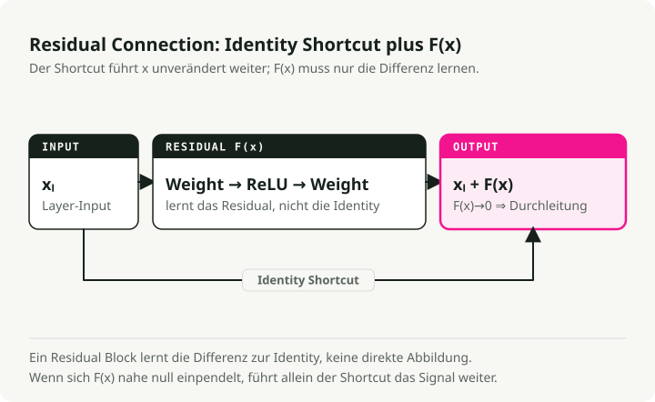
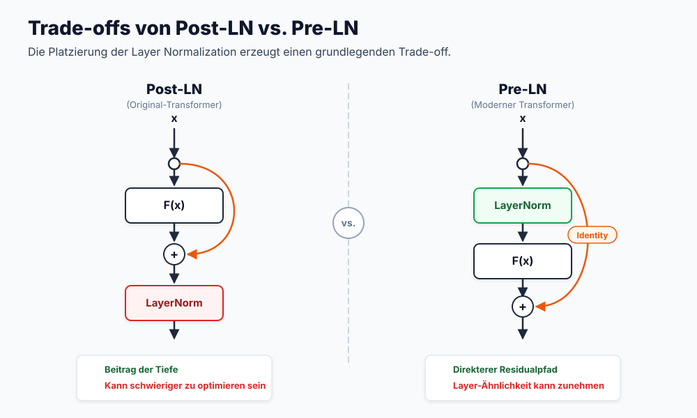
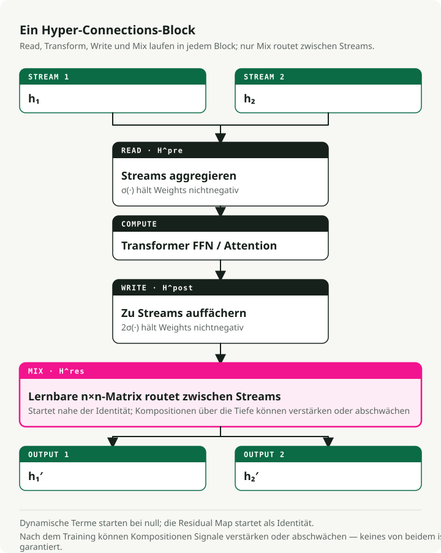
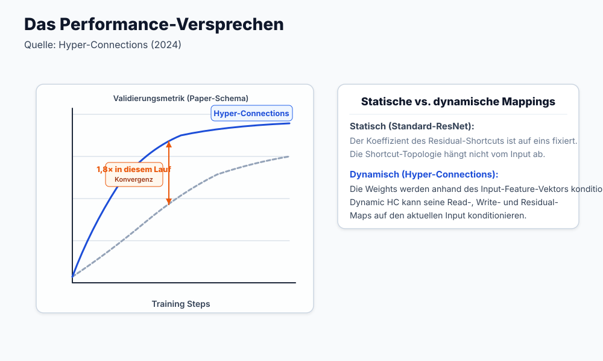
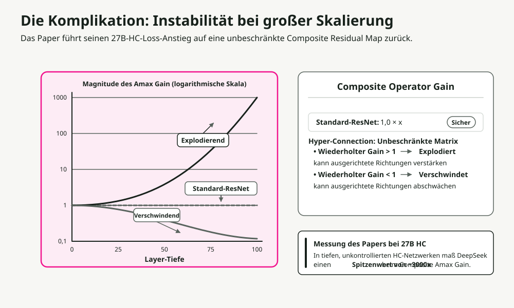
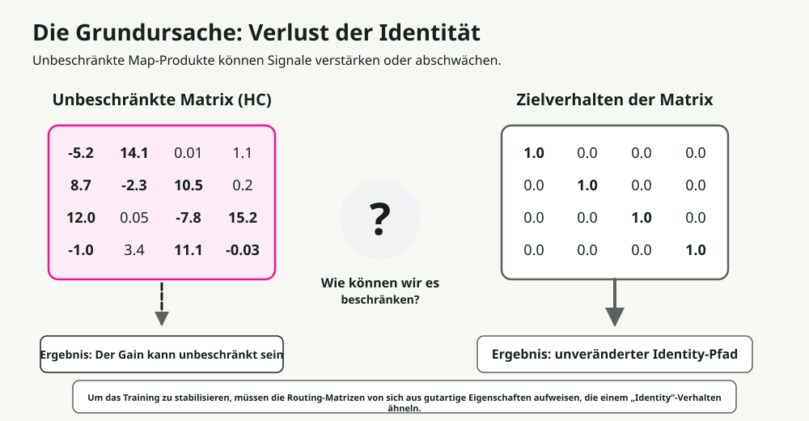
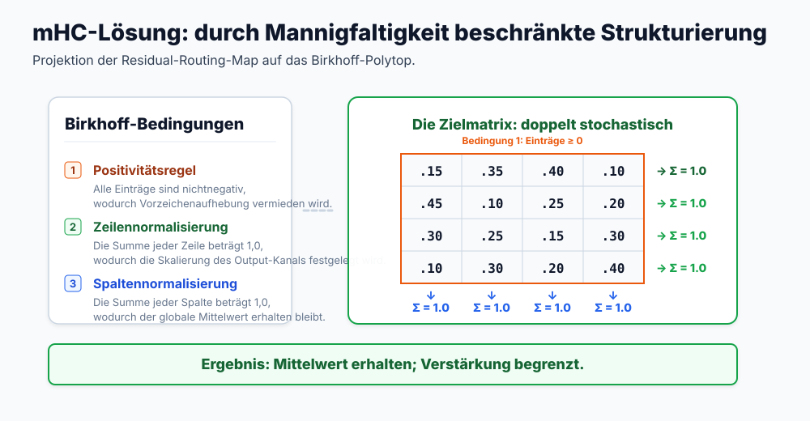
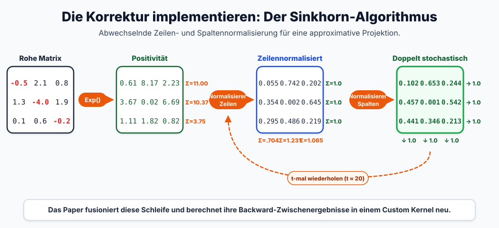
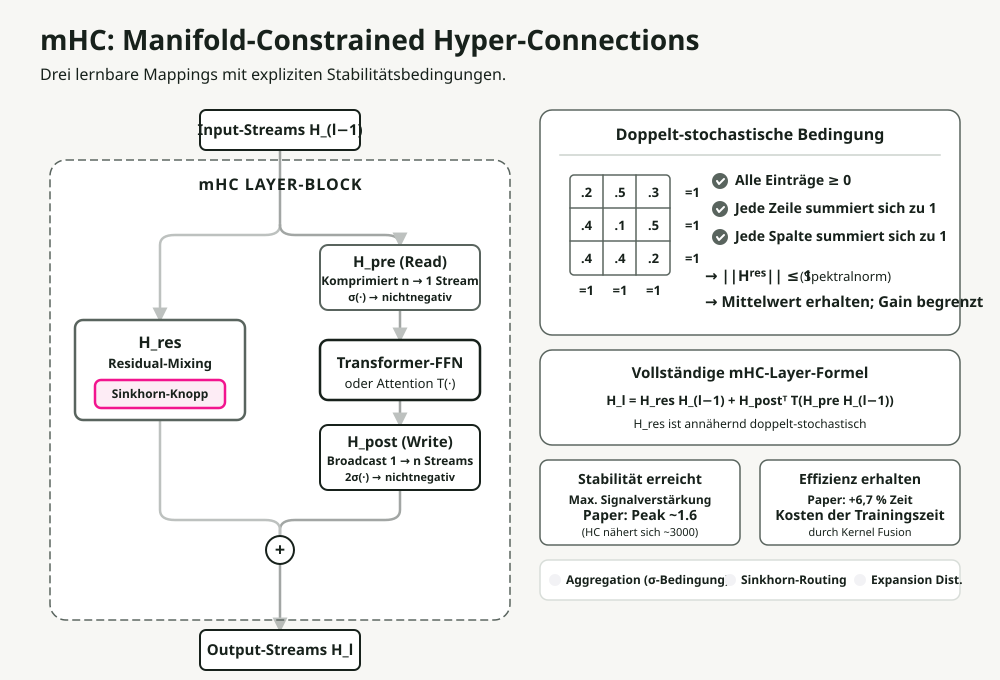

Automatische Übersetzung
Dieser Artikel wurde automatisch aus der englischen Originalversion übersetzt.
Manifold-Begrenzte Hyper-Verbindungen (mHC): Erklärung der DeepSeek-Residual-Skalierung
Die moderne Tiefenlernforschung basiert auf der Residualverbindung. Nach einem Jahrzehnt des Aufbaus immer tieferer Schichten stellten Forscher bei DeepSeek eine andere Frage: Was wäre, wenn wir stattdessen die Breite skalieren würden? Ihre Antwort lautet Manifolds-begrenzte Hyper-Verbindungen (mHC) Löst ein seit Langem bestehendes Stabilitätsproblem bei der Breitenskalierung.
In diesem Beitrag zeige ich Ihnen den Entwicklungsverlauf von einfachen Residuen bis hin zu mHC, erkläre, warum jeder Schritt notwendig war, und wie DeepSeeks Lösung in der Praxis auf größeren Skalen funktioniert.
Zusammenfassung: Hyper-Verbindungen erweitern die Residustreiber in mehrere parallele Ströme, um eine schnellere Konvergenz zu erreichen, zerstören jedoch die Identitätsabbildung, die das Training stabil hält. mHC stellt die Stabilität wieder her, indem es die Mischmatrizen mittels des differenzierbaren Sinkhorn-Knopp-Algorithmus auf den Birkhoff-Polytopus (doppelt stochastische Matrizen) beschränkt. Ergebnis: 4 parallele Ströme bei lediglich 6,7 % zusätzlichem Trainingsaufwand.
Warum Residuallücken funktionieren
Bevor wir erklären, was mHC behebt, müssen wir zunächst verstehen, worauf es aufbaut.
Das Tiefe-Problem
Das Stapeln weiterer Schichten sollte die Kapazität eines Modells erhöhen. In der Praxis werden sehr tiefe Netzwerke schwieriger zu trainieren. Die Kapazität ist vorhanden – es versagt vielmehr die gradientbasierte Optimierung: Die Gradienten verschwinden (sinken nahezu auf Null) oder explodieren (wachsen unbegrenzt), während sie durch viele Schichten wandern.
Die Lösung mit Residuallücken
The Das ResNet-Paper eine elegante Lösung eingeführt. Anstelle des Lernens einer direkten Zuordnung wird das Residuum gelernt – also der Unterschied zur Identitätsfunktion:

Der Trick besteht im Identitäts-Skript. Wenn die Restfunktion F(x) den Wert Null ausgibt, fungiert die Schicht als perfekter Durchlass. Daraus ergeben sich zwei Folgen:
- Gradienten-Expressstraße: Gradienten fließen direkt durch das Skript und umgehen so das Verschwinden von Gradienten.
- Einfache Optimierung: Wenn die Identität die optimale Lösung ist, lernt das Netzwerk einfach F(x) → 0.
Diese eine architektonische Änderung machte Netzwerke mit Hunderten von Schichten trainierbar.
Die Komplikation beim Transformer: Platzierung der Schichtnormalisierung
Transformers führten eine neue Variable ein: Wo genau die Schichtnormalisierung (Layer Normalization, LN) platziert werden soll. Die Entscheidung scheint unbedeutend, ist es aber nicht.

| Variante | LN-Platzierung | Vorteil | Hauptbeschränkung |
|---|---|---|---|
| Post-LN | Nach dem Residualblock | Hohe Modellkapazität | Gradientverschwinden: Die LN im Hauptpfad skaliert die Gradienten pro Schicht neu. |
| Vor-LN | Vor dem Restblock | Hervorragende Stabilität | Repräsentationskollaps: Die Features werden über die verschiedenen Schichten hinweg ähnlich. |
The ResiDual Die Architektur versuchte, dieses Problem mit doppelten Residuenpfaden zu lösen – einem Pre-LN-Pfad für Stabilität und einem Post-LN-Pfad für die Kapazität. Dennoch handelt es sich dabei weiterhin um einen einzigen Residuenstrom. Was wäre, wenn man mehrere parallele Ströme nutzen könnte?
Hyper-Verbindungen: Die Revolution der Breite
Hyper-Verbindungen (HV) Ich habe einen anderen Weg gewählt. Fügen Sie nicht nur Tiefe hinzu – erweitern Sie vielmehr die Breite des Residualstroms.

Was ist ein „Stream“?
In herkömmlichen Transformern bilden die Eingabetoken-Embeddings einen einzigen \(d\)-dimensionalen Vektor, der die Eigenschaften des Tokens repräsentiert. Diese Sequenz aus einem einzigen Vektor stellt den „Residual Stream“ dar, der durch jeden Block fließt.
Bei Hyper-Connections ist ein Stream eine von \(n\) parallelen Instanzen dieses Zustands.
Wie erhalten wir diese Streams? Zu Beginn des Netzwerks wird das ursprüngliche Eingabemapping \(n\)-fach repliziert (wobei \(n\) die „Erweiterungsrate“ ist, typischerweise 4). Der herkömmliche \(d\)-dimensionale versteckte Zustand wird somit zu einer \(n \times d\)-großen „Hyper-Versteckten-Matrix“.
Diese \(n\) identischen Streams durchlaufen die Transformer-Schichten des Netzwerks, wo sie durch die folgenden Mechanismen unterschiedlich aggregiert, geleitet und erweitert werden. Dadurch divergieren sie sofort und erfassen jeweils eigene Repräsentationspfade.
Kernmechanismen
Anstelle eines einzigen Residualpfades behält HC \(n\) parallele Streams bei, die durch das gesamte Netzwerk fließen. In jeder Transformer-Block erfolgen drei Operationen, wobei jede von kleinen lernbaren Gewichten gesteuert wird:
- Aggregation (\(H_{pre}\), Vorab-Kartierung): Die \(n\) eingehenden Ströme werden mithilfe einer lernbaren Matrix \(H_{pre}\) zu einem einzigen Vektor komprimiert, der dem Transformer-Block als Eingang dient. Jeder Stream wird dabei mit einem lernbaren Gewicht für die Relevanz multipliziert, wodurch eine Art Eingangsfilter entsteht.
- Expansion (\(H_{post}\), Nachkartierung): Nach dem Kern-Transformer-Block (Attention oder MLP) wird seine Ausgabe mithilfe einer lernbaren Matrix \(H_{post}\) in \(n\) separate Ströme aufgeteilt. Dies fungiert als Ausgangstür, wobei jeder Stream durch ein einzigartiges, lernbares Gewicht skaliert wird.
- Mischen (Inter-Stream-Routing): Die neu erweiterten Ströme verschmelzen mit den ursprünglichen Residualströmen. Eine \(n \times n\)-große, lernbare „Feature-Router“-Matrix (\(\mathbf{H}^{res}\)) bestimmt, wie Informationen aus jedem Stream in die anderen fließen und somit vor der nächsten Schicht Eigenschaften gegenseitig beeinflusst werden.
Die Mischungsmatrix H agiert dabei wie ein Verkehrsleitsystem: Sie leitet Eigenschaften zwischen den Strömen basierend auf gelernten Mustern weiter. Dadurch fließt deutlich reichhaltigere Information als über einen einzelnen Residualpfad.
Die Ergebnisse

HC konvergiert in etwa 1,8-mal schneller als herkömmliche Residuen. Die parallelen Ströme bieten den Gradienten mehr Verlaufswege und ermöglichen dem Netzwerk, vielfältigere Repräsentationen beizubehalten.
Das Problem
Es gibt ein kritisches Problem: HC ist im großen Maßstab instabil.
Warum Hyper-Verbindungen versagen
Die Flexibilität, die HC antreibt, ist zugleich der Grund für sein Versagen. Sie zerstört die Identitätsabbildung, die es erst ermöglicht, Residuen zu trainieren.

Die Mathematik der Instabilität
Bei Standardresiduen:
Wenn \(F(x) \rightarrow 0\) gilt, handelt es sich um die Identitätsgleichung \(x_{l+1} = x_l\). Das Signal passiert unverändert hindurch.
In Hyper-Connections beinhaltet der Restpfad eine Matrixmultiplikation:
Über L Schichten ergibt sich folgende Form des Signals:
Sollten die Werte in \(\mathbf{H}\) auch nur geringfügig von 1,0 abweichen, führt dieses Produkt entweder dazu, dass:
- die Werte explodieren: Werte größer als 1,0 vermehren sich exponentiell.
- die Werte verschwinden: Werte kleiner als 1,0 gehen exponentiell zurück.
Das DeepSeek-Team hat dies mithilfe des „Amax Gain Magnitude“-Werts gemessen, der den maximalen Verhältniswert zwischen der Amplitude des Ausgangssignals und dem Eingangssignal über alle Schichten hinweg erfasst. In herkömmlichen Hyper-Connections erreicht dieser Wert in tiefen Netzwerken ~3000. Ab diesem Punkt ist ein weiteres Training nicht mehr sinnvoll.

Das zentrale Problem: Unbeschränkte Matrizen können jeden Wert annehmen – negative Zahlen, sehr große Größen oder beliebige andere Werte. Wir benötigen eine Methode, um sie im „gut verhaltenden“ Bereich zu halten, in dem sie die Signalenergie genauso bewahren wie die Identitätsmatrix.

Die drei Einschränkungen
mHC beschränkt die Mischungsmatrix H^res darauf, doppelt stochastisch zu sein: alle Einträge sind nichtnegativ und die Summe jeder Zeile sowie jeder Spalte beträgt genau 1. Dadurch werden gleichzeitig drei Eigenschaften gewährleistet:
| Einschränkung | Regel | Warum das von Bedeutung ist |
|---|---|---|
| Positivität | Alle Elemente > 0 | Verhindert die Oszillation des Signals, die Gradienten destabilisiert. |
| Zeilensumme = 1 | Jede Zeile ergibt 1,0. | Normalisiert den Beitrag der Ausgabe – kein einzelner Stream dominiert. |
| Summe der Spalte = 1 | Jede Spalte summiert sich auf 1,0. | Normalisiert die Eingabedistribution – alle Ströme tragen gleichmäßig bei. |
Das entscheidende Ergebnis: Eingestrahlte Energie = Ausgestrahlte Energie. Die Amplitude des Signals bleibt bis tief im Netzwerk erhalten, wodurch das Problem einer exponentiellen Ansteigung vermieden wird.
Diese Einschränkung hat ebenfalls nützliche mathematische Konsequenzen:
- Spektralnorm ≤ 1: Die Spektralnorm (der größte singuläre Wert) begrenzt die Signalverstärkung. Doppelt stochastische Matrizen sind mathematisch nicht expandierend.
- Abgeschlossen unter Multiplikation: Die Komposition von doppelt stochastischen Matrizen ergibt erneut eine doppelt stochastische Matrix.
- Gewichtete Mittelung: Die Operation wird zu einer konvexen Kombination (einer gewichteten Mittelung, bei der die Gewichte die Summe 1 ergeben) der Eingänge, wodurch die Gesamtamplitude des Signals erhalten bleibt.
Der Sinkhorn-Knopp-Algorithmus
Die Herausforderung: Wie kann man eine lernbare Matrix dazu zwingen, doppelt stochastisch zu sein, ohne ihre Differentialierbarkeit zu beeinträchtigen? Der Sinkhorn-Knopp-Algorithmus löst dieses Problem. Es handelt sich dabei um eine iterative Projektion, die bereits nach nur wenigen Schritten zur doppelt stochastischen Form konvergiert.

Ein Schritt-für-Schritt-Beispiel:
Schritt 1: Positivität. Wenden Sie exp() auf die Rohgewichte an, damit alle Elemente streng positiv sind:
Raw Matrix → Positive Matrix
[-0.5 2.1 0.8] [0.6 7.9 2.2] Σ=10.7
[ 1.3 -4.0 1.9] exp [3.7 0.02 6.7] Σ=10.4
[ 0.1 0.6 -0.2] → [1.1 1.8 0.8] Σ=3.7
Schritt 2: Zeilennormalisierung. Jede Zeile wird durch ihre Summe geteilt:
Positive Matrix → Row Normalized
[0.6 7.9 2.2] [0.25 0.65 0.10] Σ=1.0
[3.7 0.02 6.7] /row [0.35 0.01 0.64] Σ=1.0
[1.1 1.8 0.8] → [0.30 0.45 0.25] Σ=1.0
Σ=0.9 Σ=1.1 Σ=0.99 ← columns not yet =1
Schritt 3: Normalisierung der Spalten. Jede Spalte wird durch ihre Summe geteilt:
Row Normalized → Doubly Stochastic
[0.25 0.65 0.10] [0.28 0.45 0.27] Σ=1.0
[0.35 0.01 0.64] /col [0.40 0.09 0.51] Σ=1.0
[0.30 0.45 0.25] → [0.32 0.46 0.22] Σ=1.0
Σ=1.0 Σ=1.0 Σ=1.0 ← converges in few iterations
Schritt 4: Iterieren. Wiederholen Sie die Schritte 2–3 insgesamt t_max Mal (typischerweise 20), bis Konvergenz erreicht ist.
Der gesamte Prozess ist differenzierbar, wodurch Gradienten während des Trainings fließen können. Zudem ist der Sinkhorn-Knopp-Algorithmus kostengünstig und verursacht nur einen minimalen Overhead im Trainingszyklus.
Auch die Initialisierung spielt eine wichtige Rolle.
Verbesserungen bei der Initialisierung
Um ein stabiles Starten des Trainings zu gewährleisten:
- Sigmoid statt Tanh: Die Koeffizienten bleiben nichtnegativ und begrenzt (zwischen 0 und 1).
- Faktor 2: Die Ausgabe der Sigmoid-Funktion liegt bei der Initialisierung bei etwa 0,5. Durch Multiplikation mit 2 erhält man ein Anfangsgewicht von etwa 1,0, was dem identitären Verhalten entspricht.
Komplette mHC-Architektur
Insgesamt:

Der Durchfluss durch jeden Block:
- Eingang: \(n\) parallele Residueströme gelangen in die Schicht.
- Aggregation (\(H_{pre}\)): Die \(n\) Ströme werden über eine gewichtete Summe unter Verwendung der Matrix \(H_{pre}\) zu einem einzigen Vektor zusammengeführt. In mHC sind diese Aggregationsgewichte lokal durch \(\sigma(\cdot)\) auf nicht-negative Werte beschränkt, was unnatürliche Skalierungen sowie zerstörerische Interferenzen verhindert.
- Berechnung: Der Standard-Transformer-Block (Attention oder MLP) verarbeitet den aggregierten Vektor.
- Erweiterung (\(H_{post}\)): Der einzige Ausgangswert des Blocks wird mittels der Matrix \(H_{post}\), die ebenfalls auf nicht-negative Werte beschränkt ist, auf \(n\) separate Aktualisierungsströme verteilt.
- Mischen (\(H_{res}\)-Routing): Die Ströme tauschen Informationen über eine \(n \times n\)-Mischmatrix \(\mathbf{H}^{res}\) aus. In mHC ist diese Matrix streng auf das Birkhoff-Polytop (doppelt stochastisch) beschränkt, wodurch die Signalenergie erhalten bleibt.
- Ausgang: Die aktualisierten \(n\) Ströme gelangen ohne Explodieren oder Verschwinden in die nächste Schicht.
Der wesentliche Unterschied zum herkömmlichen HC besteht darin, dass jede Misch- und Aggregationsoperation durch eine Sinkhorn-Beschränkung oder eine ähnliche Normalisierung erfolgt. Dadurch bleibt das Signal über Hunderte von Schichten hinweg stabil.
Infrastruktur: Praktische Umsetzung
Die Erweiterung auf \(n=4\) Ströme führt zu erheblichem Overhead. Jeder Stream benötigt eigene Speicherressourcen, und die Sinkhorn-Methode erfordert zusätzlich 20 Iterationen pro Schicht. Das DeepSeek-Team umging dieses Problem durch mehrere Optimierungen.
Kernel-Fusion
Verwendung von TileLang, sie integrierten die Sinkhorn-Iterationen mit Multiplikationen in gemischter Präzision in spezialisierte CUDA-Kerne. Dadurch werden die Zugriffe auf das Hochbandbreiten-Memory (HBM) reduziert, welches in der Regel die eigentliche Engstelle in moderner Hardware darstellt.
Selektive Neuberechnung
Das Speichern aller Zwischenzustände von Sinkhorn für die Rückpropagierung würde den Speicherbedarf stark erhöhen. Stattdessen führt mHC Folgendes durch:
- Es gibt die Zwischenaktivierungen nach dem Vorwärtslauf frei.
- Sie werden während des Rückwärtslaufs dynamisch neu berechnet.
Eine modifizierte DualPipe Die Scheduling-Logik überschneidet diese Neuberechnung mit dem Gradientenkommunikationsprozess, wodurch die Kosten für die Neuberechnung größtenteils verborgen bleiben.
Ergebnisse
Durch diese Optimierungen beträgt der Trainingsaufwand bei einer Erweiterungsrate von n=4 lediglich 6,7 % im Vergleich zur Baseline. Komplexe topologische Routing-Strategien sind somit im großen Maßstab praktikabel.
Empirische Überprüfung
Übertragen sich die theoretischen Garantien tatsächlich auf reale Verbesserungen?
Die Rohdaten des Trainingsverlaufs sind auffällig. Ohne Einschränkungen steigen bei tiefen Netzwerken unter Verwendung standardmäßiger Hyper-Connections die Signalstärken (Amax Gain) auf etwa 3.000 an, was zu erheblicher Instabilität sowie häufigen Anstiegen des Verlusts führt. Durch die Anwendung der doppelt stochastischen Einschränkung hält mHC den Wert von Amax Gain während des gesamten Trainings nahe bei 1,6.
Doch Stabilität spielt keine Rolle, wenn die Leistung des Modells nachlässt. Um die repräsentative Kapazität zu testen, verglich das Team ein mHC-27B-Modell (basierend auf der DeepSeek-V3-Architektur) mit Standard-ResNet- sowie unbeschränkten HC-Baselines. Bei Reasoning-Benchmarks wie GSM8K und MATH gewinnt mHC konsequent. Die Leistungsverbesserungen durch paralleles Stream-Routing sind tatsächlich vorhanden, und mit den Sinkhorn-Beschränkungen lässt sich schließlich diese sehr breiten Residualpfade trainieren, ohne dass der Trainingsprozess zusammenbricht.
Kompromisse und Überlegungen
mHC ist kein kostenloses Angebot. Drei Aspekte, die beachtet werden sollten:
- Rechenaufwand: 6,7 % sind für den erzielten Nutzen gering, stellen aber im Vergleich zu Standard-Residualnetzen immer noch einen zusätzlichen Kostenfaktor dar.
- Implementierungskomplexität: Man kann dies nicht einfach in reinem PyTorch schreiben und erwarten, dass es schnell läuft. Der geringe Rechenaufwand erfordert maßgeschneiderte, fein abgestimmte CUDA-Kerne.
- Starker induktiver Bias: Die doppelt stochastische Beschränkung erzwingt eine strenge Signalerhaltung. Wenn Ihre Aufgabe tatsächlich eine Signalverstärkung tiefer im Netzwerk erfordert, wirkt diese Beschränkung dem entgegen.
Wichtige Erkenntnisse
- Residuale Verbindungen funktionieren aufgrund der Identitätsabbildung: die Fähigkeit, Signale unverändert weiterzuleiten.
- Hyper-Verbindungen skalieren die Breite statt die Tiefe, wodurch durch mehrströmigen Routing eine schnellere Konvergenz erreicht wird.
- Die Flexibilität von HC zerstört die Identitätsabbildung, was zu einem Signalexplosionsphänomen in tiefen Netzwerken führt.
- mHC beschränkt die Mischmatrizen auf den Birkhoff-Polytop, wodurch die Stabilität mathematisch gewährleistet wird.
- Sinkhorn-Knopp macht die Beschränkung differenzierbar, wodurch ein End-zu-End-Training möglich wird.
- Infrastrukturmaßnahmen (Kernel-Fusion, selektive Neuberechnung) sind es, die das Ganze praktikabel machen.
Für Praktiker: Wenn Sie bei der Skalierung der Tiefe an Grenzen stoßen und Zugang zur Entwicklung eigener Kerne haben, bietet mHC einen prinzipientreuen Ansatz, um die Kapazität über die Breite zu erweitern, während die Trainingsstabilität erhalten bleibt.